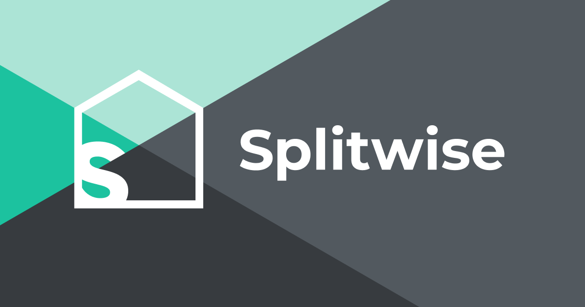

$ cat ~/projects/splitwise-ynab/README.md
Splitwise-YNAB Sync Tool

A Python application that automatically synchronizes Splitwise expenses with your YNAB (You Need A Budget) account. It continuously monitors Splitwise expenses and creates corresponding transactions in YNAB, handling split payments, repayments, and regular expenses intelligently.
Features
- Automatic Sync: Continuously monitors Splitwise for new expenses
- Smart Transaction Processing: Handles split payments, repayments, and regular expenses
- Duplicate Prevention: Avoids creating duplicate transactions
- Flexible Configuration: Customizable sync intervals, date ranges, and account mappings
- Robust Error Handling: Comprehensive logging and recovery
Setup
Prerequisites
- Python 3.7 or higher
- Splitwise API key
- YNAB Personal Access Token
- A dedicated Splitwise account in YNAB
- A Splitwise category in YNAB for shared expenses
Installation
-
Clone the repository
git clone <repository-url> cd Splitwise-YNAB-Integration
-
Install dependencies
pip install -r requirements.txt
-
Create a
.envfile with your configuration# Required API Keys SW_API_KEY=your_splitwise_api_key_here YNAB_TOKEN=your_ynab_personal_access_token_here # YNAB Configuration YNAB_BUDGET=last-used YNAB_SW_ACCOUNT=Splitwise YNAB_SW_CATEGORY=Splitwise # Sync Settings USER_NAME=your_name SYNC_DAYS=7 POLL_INTERVAL=15 ALLOW_DUPLICATES=false # Logging LOG_LEVEL=INFO
Configuration Options
| Variable | Default | Description |
|---|---|---|
SW_API_KEY |
Required | Your Splitwise API key |
YNAB_TOKEN |
Required | Your YNAB Personal Access Token |
YNAB_BUDGET |
last-used |
Name of your YNAB budget or last-used |
YNAB_SW_ACCOUNT |
Splitwise |
Name of your Splitwise tracking account in YNAB |
YNAB_SW_CATEGORY |
Splitwise |
Category for shared expenses |
USER_NAME |
you |
Your name for transaction memos |
SYNC_DAYS |
7 |
How many days back to check for expenses |
POLL_INTERVAL |
15 |
Minutes between sync cycles |
ALLOW_DUPLICATES |
false |
Whether to allow duplicate transactions |
LOG_LEVEL |
INFO |
Logging level (DEBUG, INFO,
WARNING, ERROR)
|
Usage
Running the Sync Tool
python splitwise_ynab_sync.py
The tool will:
- Connect to both Splitwise and YNAB APIs
- Fetch recent expenses from Splitwise
- Check for existing transactions in YNAB to avoid duplicates
- Process and create new transactions as needed
- Sleep for the configured interval and repeat
Transaction Types
-
Split Payments – When you pay for an expense that's
shared with others
- Creates a split transaction with your share (outflow) and others' shares (inflow)
- Others' shares are categorized to your Splitwise category
-
Repayments – When you pay someone back or settle up
- Creates an outflow transaction categorized to your Splitwise category
-
Regular Expenses – When someone else pays and you
owe money
- Creates an inflow transaction (left uncategorized for you to assign)
API Keys Setup
Splitwise API Key
- Visit Splitwise Apps
- Register a new application
- Copy your Consumer Key (API Key)
YNAB Personal Access Token
- Go to YNAB Developer Settings
- Generate a new Personal Access Token
- Copy the token and add it to your
.env
Project Structure
├── splitwise_ynab_sync.py # Main application entry point ├──
config.py # Configuration management ├── api_client.py # API client
classes for Splitwise and YNAB ├── transaction_processor.py # Expense
processing logic ├── requirements.txt # Python dependencies └── .env #
Environment configuration (create this)
Contributing
This project was refactored for improved maintainability and clarity. Feel free to submit issues or pull requests for enhancements.
License
This project is open source. Please check the license file for more details.